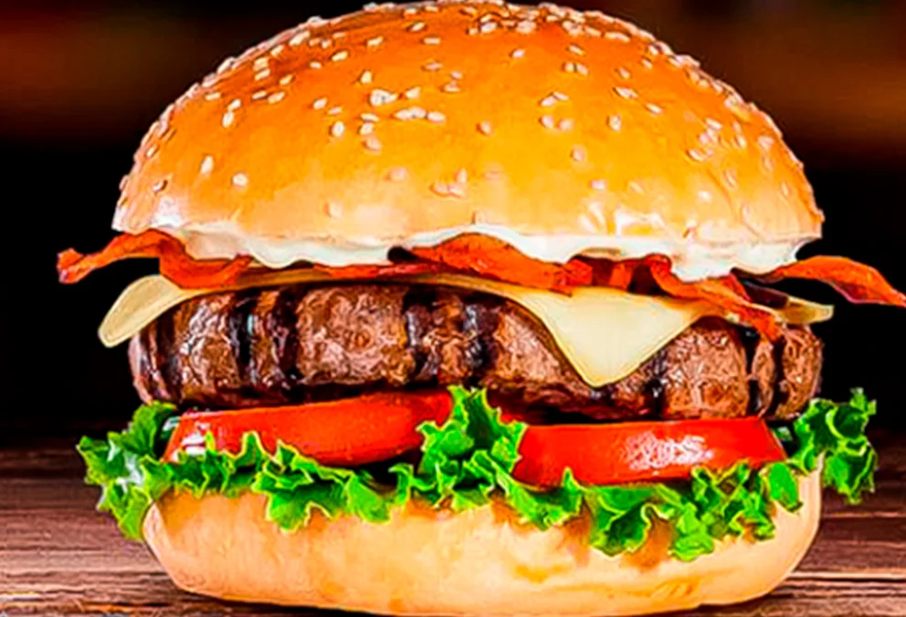
Heladería · Postres · Comidas rápidas
Sabores que hacen más cool tu día.
Un lugar tropical para encontrarnos, compartir y disfrutar antojos dulces y salados en el corazón de Florencia.
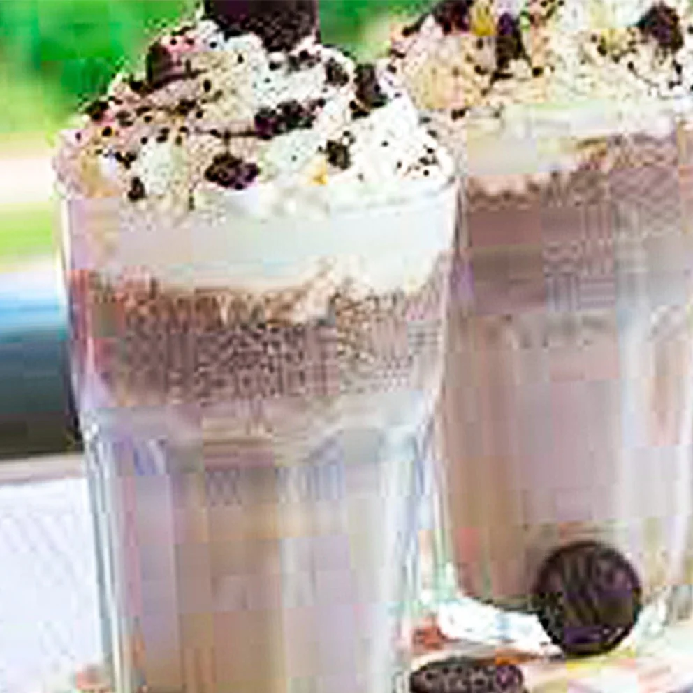
FlorenciaCaquetá
Elige tu momento
Hay un antojo esperando por ti.
Opciones dulces, frescas y saladas preparadas para disfrutar aquí o pedir por WhatsApp.
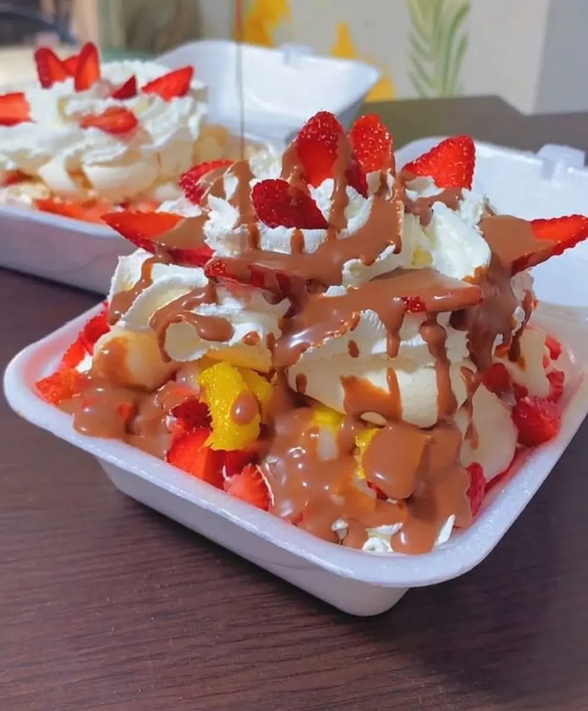
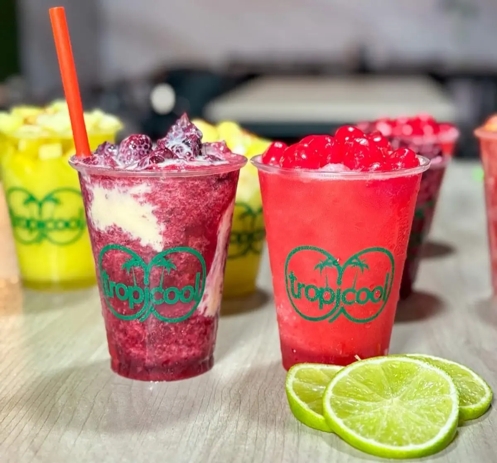
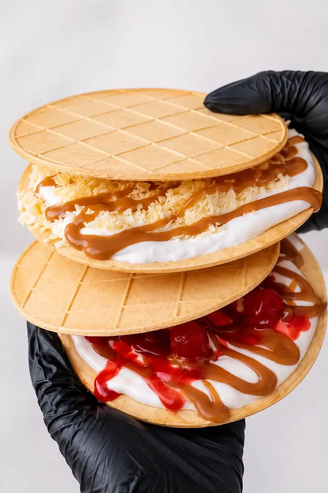
Menú completo
Explora nuestra carta.
Toca cualquiera de las páginas para verla en grande, acercar los detalles y elegir tu próximo antojo.
¿Ya elegiste?
Confirma disponibilidad y haz tu pedido directamente por WhatsApp.
Nuestra nueva casa
Un espacio natural, cálido y muy Tropicool.
Diseñamos una sede para que cada visita se sienta especial: vegetación, luz, texturas naturales y rincones hechos para conversar, celebrar y volver.
- 01Ambientes interiores y al aire libre
- 02Un plan para compartir en familia o con amigos
- 03En plena Zona Rosa de Florencia
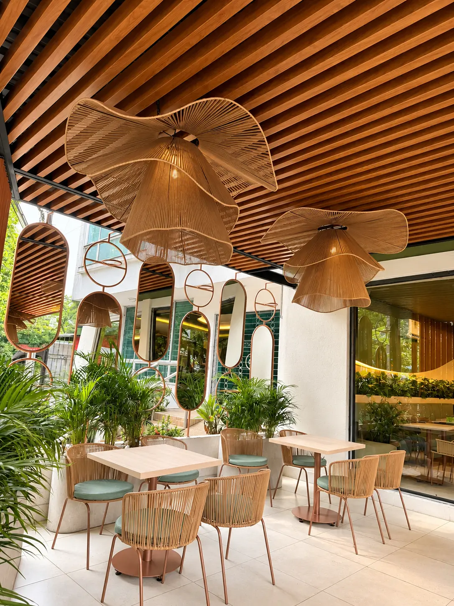
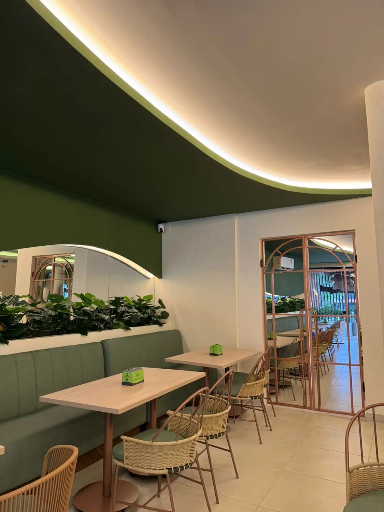
sede
Un recorrido por nuestra nueva sede
Ven a conocernos
Más que un antojo, un lugar para disfrutar.
Tropicool combina productos llenos de sabor con una experiencia fresca y cercana. Aquí caben una tarde tranquila, una celebración o ese gusto que no necesita explicación.
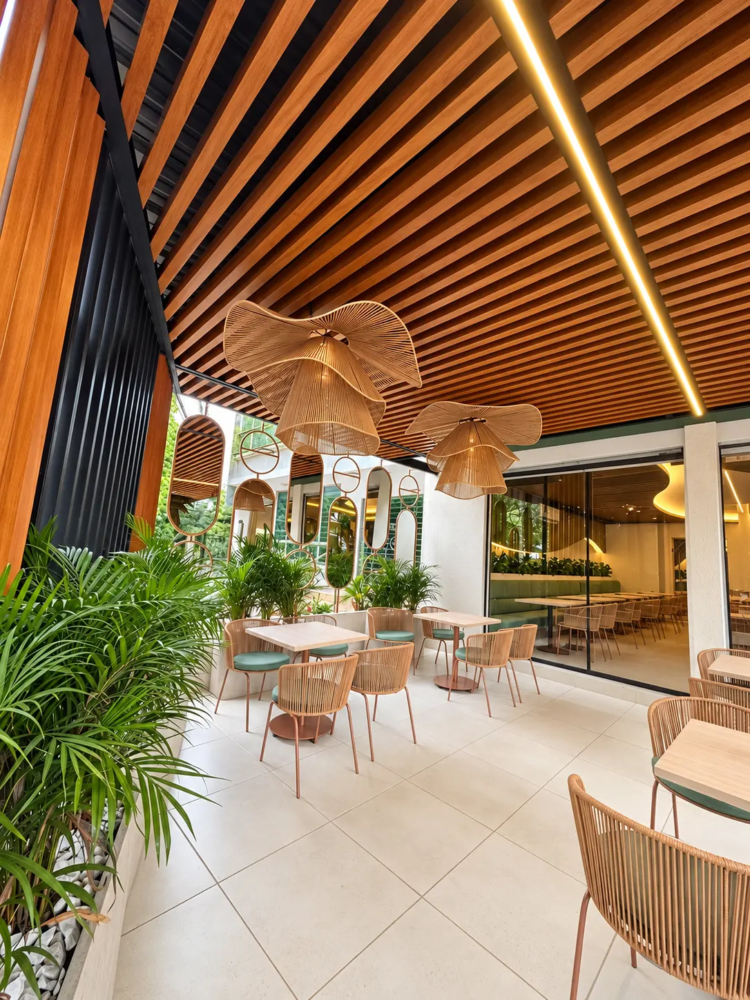
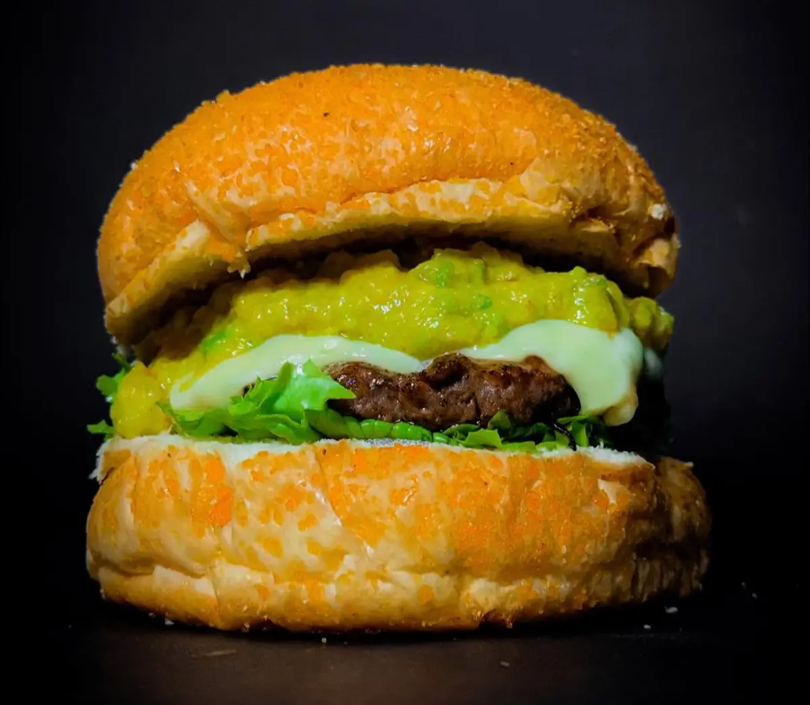
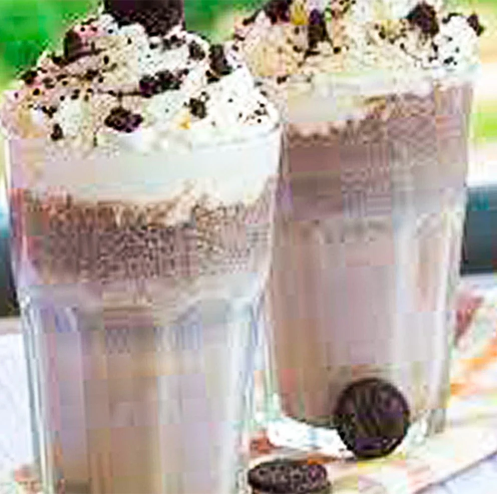
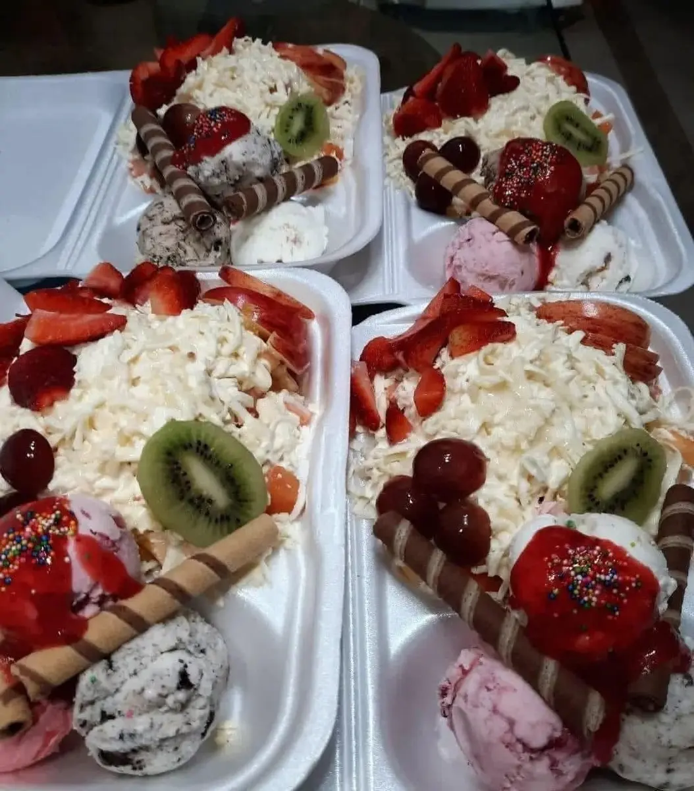
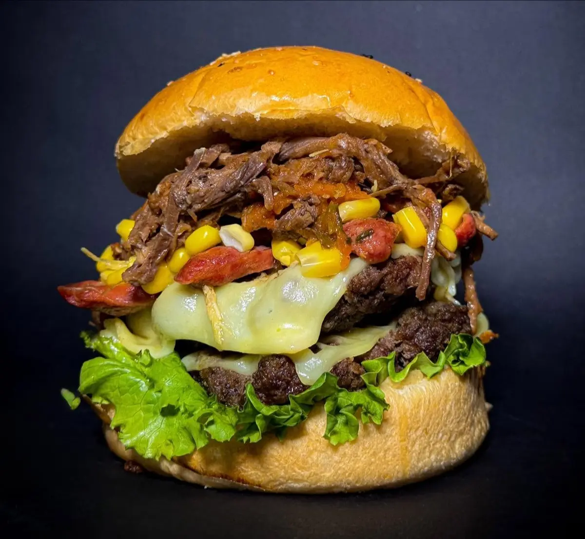
Estamos en Florencia
Zona Rosa · Florencia, Caquetá
Tu próximo plan tiene sabor tropical.
Visítanos en nuestra nueva ubicación o escríbenos para consultar el menú, disponibilidad y horario de atención.
Cra. 12 #6-109 · Barrio Juan XXIIIZona Rosa · Florencia, Caquetá